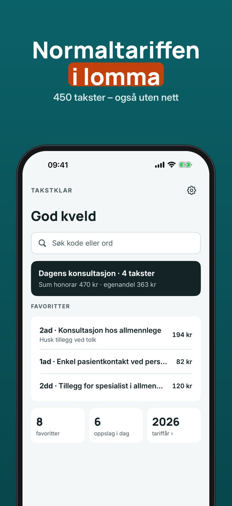
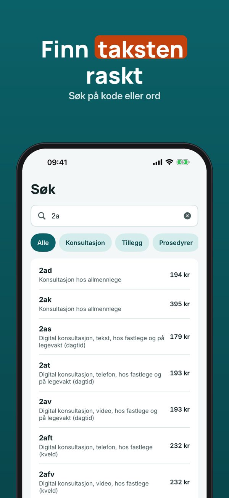
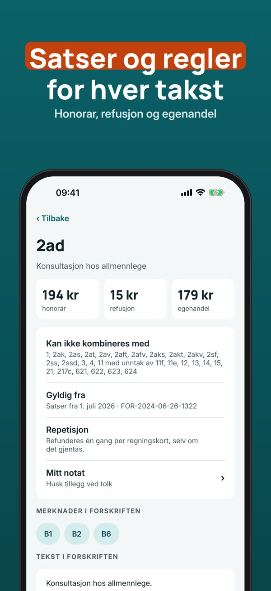
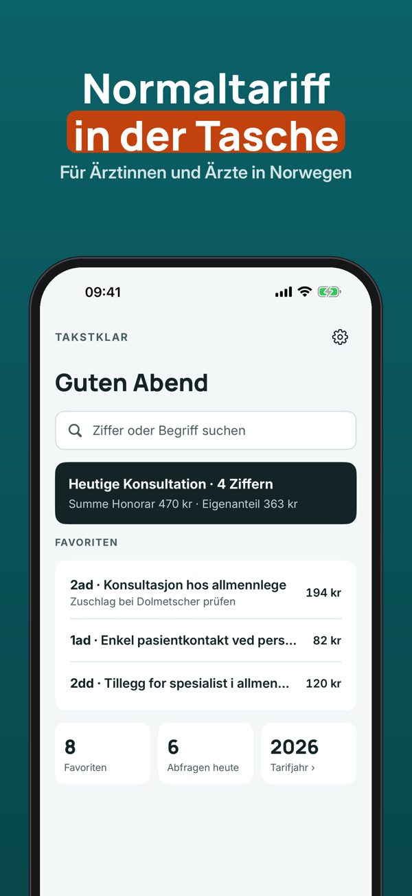
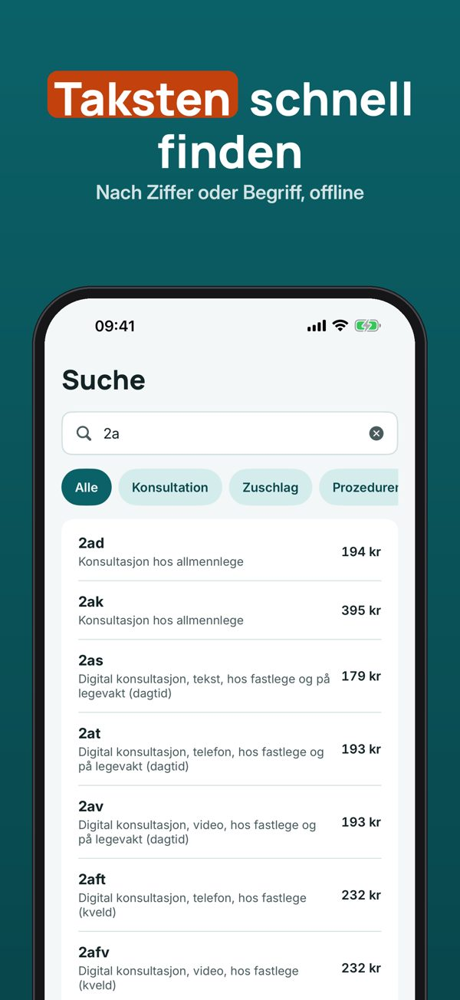
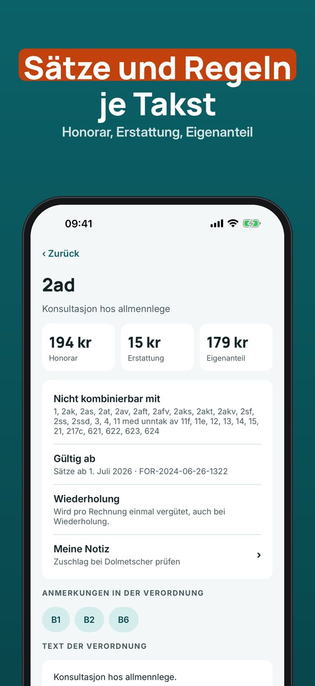

Takstkoder, regler og søk
Finn riktig takstkode raskt – også uten nett. Søk på kode eller ord, se satser og ugyldige kombinasjoner, og sett sammen takstene for en konsultasjon.



Takstklar er et oppslagsverk for leger i Norge: søk i normaltariffen, se satser og regler for hver takst og sett sammen takstene for et besøk – lagret på telefonen.
Tabellen er takstene i kapittel II i forskrift om stønad til dekning av utgifter til undersøkelse og behandling hos lege (FOR-2024-06-26-1322), med satser fra 1. juli 2026. Inneholder data under Norsk lisens for offentlige data (NLOD 2.0) tilgjengeliggjort av Lovdata.
Søk, takstdetaljer, 5 favoritter og de siste 10 oppslagene kan brukes uten kjøp. Full versjon er et engangskjøp som låser opp konsultasjonen med sum, maler, notater, ubegrenset favoritter og hele historikken. Ingen abonnement.
Takstklar er et oppslagsverk og er ikke tilknyttet Legeforeningen, Helfo eller Helse- og omsorgsdepartementet. Kontroller alltid satser og regler mot gjeldende tariff. Du har selv ansvaret for oppgjøret.
Terms of Use (EULA): https://www.apple.com/legal/internet-services/itunes/dev/stdeula/
Normaltariff offline suchen
Für Ärztinnen und Ärzte in Norwegen: Taksten der Normaltariff schnell finden – auch ohne Internet. Sätze, ungültige Kombinationen und Konsultationen mit Summe.



Takstklar ist ein Nachschlagewerk für Ärztinnen und Ärzte, die in Norwegen arbeiten: die norwegische Normaltariff durchsuchen, Sätze und Regeln je Takst sehen und die Taksten für einen Besuch zusammenstellen – gespeichert auf dem Telefon. Die Oberfläche gibt es auf Deutsch, die Tariftexte sind norwegisch wie in der Verordnung.
Die Tabelle sind die Taksten in Kapitel II der norwegischen Verordnung FOR-2024-06-26-1322, mit Sätzen ab 1. Juli 2026 (Daten von Lovdata unter NLOD 2.0). Schweizer TARDOC und deutsche GOÄ sind nicht enthalten.
Suche, Takst-Details, 5 Favoriten und die letzten 10 Abfragen sind ohne Kauf nutzbar. Die Vollversion ist ein Einmalkauf und schaltet Konsultationen mit Summe, Vorlagen, Notizen, unbegrenzte Favoriten und den ganzen Verlauf frei. Kein Abo.
Takstklar ist ein Nachschlagewerk und nicht mit Legeforeningen, Helfo oder dem norwegischen Gesundheitsministerium verbunden. Prüfe Sätze und Regeln immer am geltenden Tarif.
Terms of Use (EULA): https://www.apple.com/legal/internet-services/itunes/dev/stdeula/